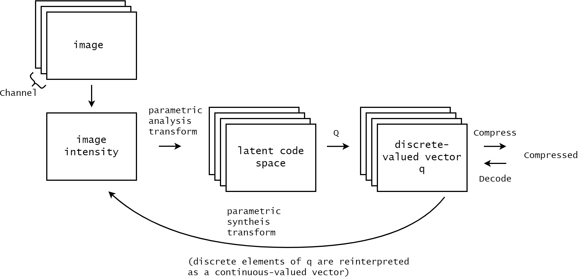

笔记《END-TO-END OPTIMIZED IMAGE COMPRESSION》
为了 factorized entropy model 来看
来源
论文 https://arxiv.org/abs/1611.01704 复现 https://github.com/liujiaheng/iclr_17_compression
笔记
General nonlinear transform coding framework
理解为

此处对压缩一笔带过，其他文章也是，虽然确实在这里不重要，但压缩具体是什么样的？
proxy loss function
针对量化带来的零梯度为什么会出现零梯度？直觉是否正确 —— 邻近的值在数值上临近，量化后容易到同一点？
"we use a proxy loss function based on a continuous relaxation of the probability model, replacing the quantization step with additive uniform noise." 实际做法和 DCVC 等一样，不过说法很不同
又见 VAE https://export.arxiv.org/abs/1312.6114 variational autoencoder
关于叠加均匀噪声处理量化问题的好处，之前看到过和文章一致的 https://bygonexf.github.io/post/e2e-entropy-model/
关于 synthesis transform
文章中该部分的上采样以 0 补充（公式 5）
PERCEPTUAL TRANSFORMS
color images, for which we do not currently have a reliable perceptual metric.
训练
大致看 DCVC 的思路和此篇一致，有不少一样的论断比如

关于训练的部分看的还是不太懂，主要还是不理解训练的困难是怎么引起的
损失函数

压缩率用熵衡量很正常，此处“directly”应该也是说用熵近似代替交叉熵？但对失真的衡量是怎么来的，虽然前文有提及 d，

但还是不清楚 E[d(z,z)] 的含义

DCVC 的 loss 是否与此一致？
变分法
信息熵是泛函